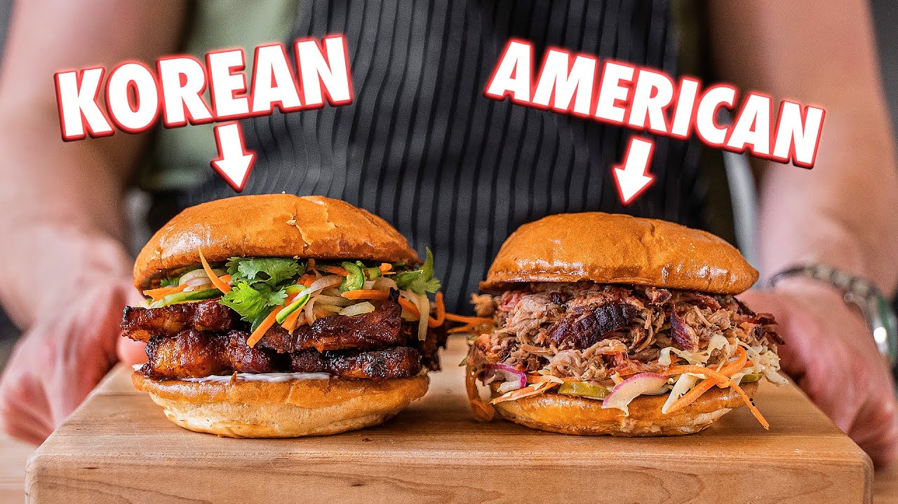

Joshua Weissman's BBQ Pork Sandwiches

Description
Look I make a lot of sandwiches on this channel but that's not a bad thing, especially when we're talking BBQ pulled pork sandwiches two different ways.
These two sandwiches, American BBQ and Korean BBQ are very special and they deliver an experience unlike any other.
Ingredients
Seasoning Ingredients:
- 1 tbsp spanish paprika
- 1 tbsp light brown sugar
- 1 tbsp garlic powder
- 2 tsp onion powder
- 3 tbsp kosher salt
- 1 tbsp fresh groudn black pepper
Pork Ingredients:
- 1 large bone-in boston butt
- 1.5 cups apple cider
- 1/2 cups favorite beer
BBQ Sauce Ingredients:
- 2.5 tbsp dark brown sugar
- 1 tsp ground white pepper
- 2 tsp cayenne powder
- 1 tbsp kosher salt
- 2 tbsp ketchup
- 2 cups apple cider vinegar
Slaw Ingredients
- 1/2 cabbage head, thinly sliced
- 2 carrots, julienned
- 1 red onion, peeled and thinly sliced
- 3 tbsp mayonnaise
- 2 tsp dijon mustard
- salt to taste
- pepper to taste
- 3 tbsp apple cider vinegar
American BBQ Sandwich Assembly
- toasted buns
- pickles
- pulled pork
- coleslaw
Pork Bulgogi Ingredients:
- 2lbs whole skinless pork belly
- 3-inch ginger knob, peeled
- 2-3 shallots, peeled
- 1 asian pear, peeled and cheeked
- 7 garlic colves
- 1/2 cups gochujan
- 2 tbsp gochugaru
- 2 tsp sesame oil, toasted
- 1 tbsp sweet soy sauce
- 2 tbsp dark soy sauce
- 2 tbsp mirin
Sandwich Salad Ingredients:
- 1/2 darkon, peeled and julienned
- 1 english cucumber, julienned
- 2 carrots, julienned
- 1 serrano chile, thinly sliced
- 1 tsp granulated white sugar
- 2 tsp kosher salt
- 2 tbsp unseasoned rice vinegar
Korean BBQ Sandwich Assembly
- toasted buns
- mayonnaise
- pork
- sandwich salad
- cilantro leaves
Steps
Seasoning Method:
- In a small bowl, add in all ingredients.
- Whisk to combine.
BBQ Pork Method:
- Pat the Boston butt completely dry with paper towels. Season generously on all sides with seasoning.
- Place in a smoker preheated to 250F for 4-5 hours or internal temperature reaches 160F.
- In a roasting tray lined with foil, add the pork roast and pour in apple cider and beer. Wrap tightly.
- Place back in the smoker and increase the temperature to 300F and cook for 3-4 more hours or until the internal temperature is 205F.
- Remove and let the pork cool while still tightly wrapped in the foil for 45 minutes.
- Remove the bone from the pork roast and using gloves shred the meat.
- Add BBQ sauce to the desired taste.
BBQ Sauce Method:
- In a medium saucepan, add and combine all ingredients.
- Heat over medium heat until everything is dissolved.
- Transfer to a bottle.
Coleslaw Method:
- To a large bowl, add and combine all ingredients.
- Toss all ingredients until thoroughly combined.
- Season to taste with salt and pepper
BBQ Sandwich Assembly:
- Toast buns on both sides.
- Add a layer of pickles and slaw.
- Add a generous amount of pork and top with the top bun.
Bulgogi Method:
- Cut the pork belly into strips and place it into a large bowl.
- In a blender, add peeled ginger knob, peeled shallots, peeled Asian pear, garlic cloves, gochujang, gochugaru, toasted sesame oil, sweet soy sauce, dark soy sauce, and mirin.
- Blend on high speed until smooth.
- Pour sauce all over the pork belly slices. Toast to coat thoroughly. Cover and marinate in the refrigerator for 30 minutes or overnight.
- Set on a wire rack in a foil-lined rimmed baking sheet and place in a 450F oven for 15-20 minutes.
- Let cool slightly before assembly.
Sandwich Salad Method:
- In a medium bowl, add in all ingredients.
- Tos by hand until thoroughly combined.
Bulgogi Sandwich Assembly:
- Toast buns on both sides.
- Add kewpie mayonnaise to the bottom bun.
- Add a thick layer of bulgogi pork.
- Add a generous amount of sandwich salad.
- Top with cinantro leaves and top with the top bun.